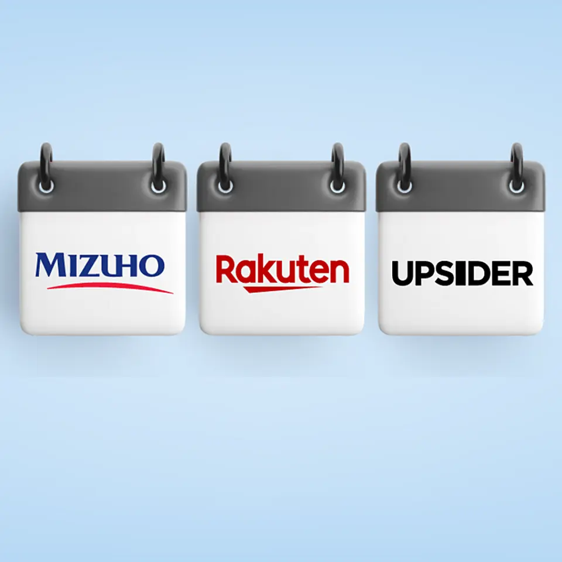
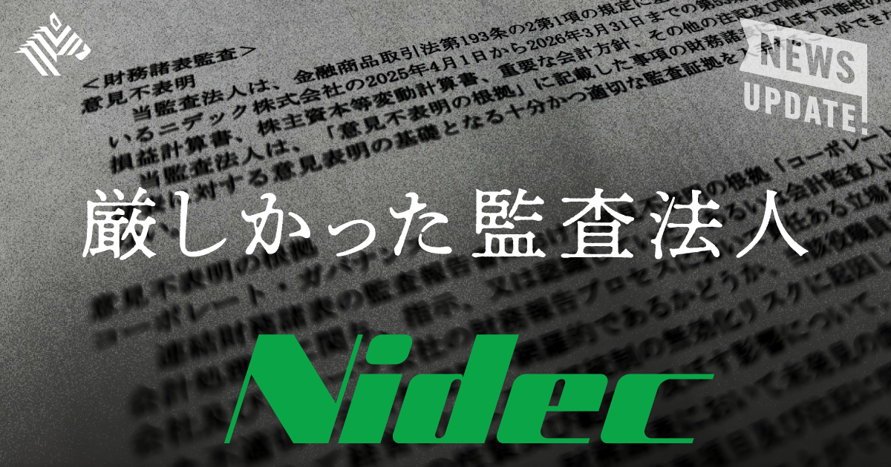
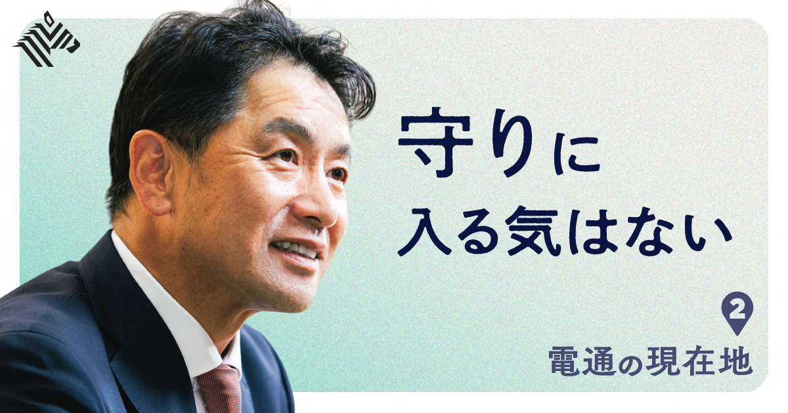

01【本日始動】みずほ・楽天・UPSIDER、新連合の勝算
発行日時：2026年10月1日 05:30 JST

あなたに関係ありそうな理由
事業の支払いと資金繰りを考える際に、カード会社・銀行・与信技術会社が役割を分けて法人決済へ入る構図をつかめます。
概要
みずほフィナンシャルグループ、楽天グループ、法人カードのUPSIDERが組み、楽天ビジネスカード Platinumを10月1日に申し込み・発行開始した。発行主体は楽天カードで、UPSIDERは法人向けカードで培った与信モデルと運用を担う。年会費は無料、還元率は楽天ポイント1％、原則として決算書を出さずにオンラインで申し込め、利用可能額は最大10億円としている。個人の信用や過去の決算書に偏りがちな従来の審査と違い、銀行口座の入出金など日々の事業データを見て、成長中の企業にも与信を出しやすくする狙いだ。利用額が大きく変わる法人の支出を、カード会社だけではなく、銀行とデータ技術の組み合わせで扱おうとしている。
記事が重視するのは、一枚の新カードよりも三社が持ち寄る資産の違いである。楽天グループは法人向けサービスを通じて約90万社との接点を持ち、楽天カードには発行・決済・ポイント運営の基盤がある。みずほは資金と金融機関としての顧客基盤を持つ。UPSIDERは2018年創業で、累計決済額1.5兆円、顧客数12万社まで広げた。国内のBtoB決済額は2024年に約1,193兆円だが、記事によれば現金・銀行振込が99％を占め、カード決済は1％未満だという。消費者向けで広がったカードの利便性を、請求・経費・資金管理が複雑な法人領域へどう移せるかが市場の余地になる。
今回の連携は、みずほと楽天の資本・業務提携の延長にもある。両社は楽天証券、楽天カードへと協業を広げ、楽天銀行ではみずほが10.5％を持つ関係を築いてきた。UPSIDERも2025年にみずほグループ入りしており、資金、顧客接点、日次データを一つの法人サービスへつなぐ形になる。表示コメントでは、クラウド利用料やオンライン広告費などカードで支払える経費が増える中、法人カードの利用がどこまで広がるか、既存カード会社がどう動くかが論点になった。無料と高い利用可能額だけで採用を決めず、支払い先の対応状況、会計処理、与信の更新条件、資金繰りへの影響を確認したい。記事は、法人決済の慣行を一気に置き換えると断言するものではない。むしろ、決済情報が与信と金融サービスにどう接続されるかを見ていく記事である。
仕事や会話で使える一言
「カードの還元率だけでなく、日々の入出金データが与信にどう使われるかを見たいですね。」
NewsPicks原文を読む
02【不穏】ニデック決算、監査法人が「意見不表明」の意味
発行日時：2026年10月1日 05:30 JST

あなたに関係ありそうな理由
決算の提出可否と会社の立て直しを分け、数字だけでなく監査証拠・関与者・内部統制を確認する重要性が分かります。
概要
ニデックは9月30日午後3時50分、期限当日に有価証券報告書を提出した。提出できなければ上場廃止基準に触れる局面を回避したが、記事は「出せた」ことと「問題が解決した」ことを明確に分けている。報告書では売上高が2兆7087億円で前年より4％増えた一方、純損失は5646億円に達した。自動車分野で約2300億円、家電・商用・産業分野で約3300億円など、減損損失は計6321億円である。2期分を合計すると減損は7400億円を超え、自己資本は約1.2兆円から8000億円を下回る水準まで減った。翌期は償却負担の低下による1000億円の利益予想を掲げるが、それだけで損失の原因が消えるわけではない。
最も重いのは、PwC Japanが2期連続で付けた「意見不表明」だ。監査法人が決算を虚偽と断定したという意味ではないが、適正かどうか判断するための十分かつ適切な監査証拠を得られなかったことを示す。記事は、過去の不適切会計に関わった人物が残り、異動・退職の範囲にも確証を持てないこと、減損判断の根拠を裏付ける証拠が不足したことを理由として挙げる。損失額を計上した後でも、その数字を作る過程と、それを検証できる資料が整わなければ、監査は意見を出せない。ここが通常の業績悪化と異なる点である。
上場維持に必要な提出は果たしたものの、特別注意銘柄に関する内部管理体制確認書の期限は10月末に残る。記事では審査に2〜3カ月かかる見通しも示され、提出後の統治改革が次の焦点になる。時間外取引で株価が7％超下落したという反応は、投資家が単に赤字額ではなく、再発防止と監査の土台を見ていることを表す。表示コメントでも、問題は会計処理の技術論だけではなく、誰が情報を作り、異論を受け止め、外部が確かめられる状態に戻せるかだという意見が目立った。数値の訂正だけでは足りず、資料を残す日常の管理を再構築できるかが問われる。事業の再建策や将来予想を評価する前に、担当者の入れ替え、権限の分離、証憑の保存、取締役会への報告が実際に機能するかを追いたい。記事は、提出期限を守ったことを一つの通過点とし、監査意見を出せる環境を取り戻すまでを再建の本体としている。
仕事や会話で使える一言
「決算を出せたかではなく、監査人が数字を確かめられる状態に戻ったかを見ましょう。」
NewsPicks原文を読む
03【直撃】新社長に聞く、AI時代に「電通に頼む理由」とは？
発行日時：2026年10月1日 05:30 JST

あなたに関係ありそうな理由
広告会社がAI時代に何を残し、何を実装まで担うのかは、顧客接点や外部パートナーの選び方を考える参考になります。
概要
電通の新社長、松本氏へのインタビューは、AIが制作や分析を変える中で、広告会社に何を頼む理由が残るのかを問う。松本氏は、日本事業のオーガニック成長率が2025年に6.2％となり、売上総利益と調整後営業利益がそれぞれ過去5年、過去2年で最も高い水準になったと説明する。一方、海外事業には課題があり、日本で得た成長をグループにも生かす必要があるという。記事は、業績を単なる広告出稿の増減としてではなく、生活者理解を使って企業の変化を支える事業へ、どこまで広げられるかという問いとして扱う。
同社は広告以外の領域を拡大しており、国内の売上総利益に占める非広告の比率は約4割になった。ブランド変革のBX、AIを使ったサービス、組織や業務の変革を、戦略提案だけで終わらせず実行まで扱う方針だ。AIについても、SaaSを提供する側と、顧客企業の現場で使えるように直接支援する側の両方を目指す。松本氏はPDCAにシミュレーションのSを加えた「PSDCA」を掲げ、仮説を早く試し、実装して結果を次の判断へ戻す流れを説明する。広告制作の経験を、データや技術とつなぎ、意思決定と現場の間に置こうとしている。
組織面では、部署の境界を越え、全社員が顧客に向き合える形を志向する。AIが処理できる作業が増えても、人が現実の生活者をどう理解し、面白さや違和感をどこで見つけるかは残るという考えだ。松本氏は、生活者の現実に触れる感覚と、仕事に遊び心を持ち込む姿勢も、効率化では置き換えにくい領域だと語る。記事の中で松本氏は、広告会社が総合コンサルティング会社の後追いになるのではなく、クリエイティブとマーケティングの強みを基礎にする必要を語る。表示コメントでも、古くからの表現・企画力を弱めず、AIやデータを使って実行範囲を広げられるかが評価の分かれ目だという指摘があった。発注する側は、AI導入そのものを目的にせず、顧客理解、戦略、制作、導入後の運用のどこを任せ、どこを自社に残すのかを具体化したい。記事は「AIに強い」ことを抽象的に掲げるのでなく、異なる専門性を顧客の実務へ届ける組織を作れるかに、電通の次の価値を明確に置いている。
仕事や会話で使える一言
「AI導入の相談でも、顧客理解から実装後の運用まで、誰が担うかを分けて考えたいですね。」
NewsPicks原文を読む
04【真相】なぜ、成功する企業は「カルチャー」を売るのか
発行日時：2026年10月1日 05:30 JST
あなたに関係ありそうな理由
機能だけでは選ばれにくい時代に、顧客・採用候補・地域との関係を、商品外の体験でどう育てるかを考える材料になります。
概要
宮武徹郎氏が、テック企業がファッションやライフスタイル企業のように、イベント、限定グッズ、場づくりを通じてカルチャーを売る動きを追った。例として、Anthropicがチェリー・レーン・シアターとA24のレストランで開いた少人数のサパークラブ、OpenAIのクリエイター向けサマークラブ、製品発表を文化的な出来事として見せる演出が挙げられる。ソフトウェアの機能は競合に模倣されやすく、AIによってコンテンツ制作も速くなる。そこで企業は、何を提供するかだけではなく、誰と何を大切にする集団なのかを、商品外の接点で伝えようとしている。
記事はこの動きを、単におしゃれな宣伝として扱わない。大型資金を得たAI企業はブランドへの投資余力があり、注意を集め、信頼をつくり、人材を採るための競争も強い。BtoB企業であっても、導入担当者だけでなく、社員候補、社会、政策をつくる側に理解される必要がある。ファンがいることは、採用や世論形成に影響し得るためだ。製品の性能表では同じように見える企業でも、どの会話に参加し、どんな場を開き、何に賛同するかで印象が変わる。カルチャーは広告の飾りではなく、選ばれる理由を長い時間で補う投資として位置づけられている。
一方で、ブランド投資が大きくなれば、それが事業の持続性と釣り合っているかを見なければならない。記事はPalantirやAndurilが持つ国家安全保障や技術観を前面に出したブランド、テック企業によるスポーツ、とくにF1への協賛にも触れる。資本支出の規模が変わった表れとも読めるが、支出の派手さだけから成長を断定してはいけない。2021年の暗号資産業界の熱狂を参照しながら、ブランドが実際の信頼や顧客価値へ結び付くかを確かめる必要を示す。表示コメントでは、機能差が小さくなるほど、企業の目的や人格が差別化になるという意見があった。自社で応用するなら、イベントやノベルティを先に考えるより、誰にどの体験を通じて何を信頼してほしいのかを定めたい。製品、採用、発信がばらばらでは、カルチャーを売ることにはならない。記事は、ブランドを短期の話題づくりで終わらせず、商品と矛盾しない関係づくりとして扱うべきだと伝えている。
仕事や会話で使える一言
「機能の説明だけでなく、誰とどんな関係を育てたいブランドかも見えているでしょうか。」
NewsPicks原文を読む
05【世界のニュース７選】テルアビブ行き便でパイロットが同僚刺す 乗客が制圧
発行日時：2026年10月1日 17:00 JST
あなたに関係ありそうな理由
航空安全、AI統治、地政学、金融、気候を別々の一次ニュースとして短時間に把握し、仕事の前提となる海外動向を更新できます。
概要
英Economistの記事をもとに、NewsPicks編集部が世界の七つの動きをまとめた日次の国際ニュースである。冒頭では、ドバイからテルアビブへ向かったフライドバイ便で、副操縦士が機長を刺したとされ、乗客が取り押さえたためサウジアラビアへ着陸した出来事を取り上げる。イスラエル行きの便が止まる事態になり、航空の安全管理と地域情勢が結び付く場面として伝える。一つの事件だけを大きく扱うのではなく、同じ日に起きた技術、金融、気候、エネルギーのニュースを、背景が異なるまま並べて読めることがこの連載の特徴である。
技術では、米連邦取引委員会がAnthropicやOpenAIを含むAI企業を調べる動き、GoogleのAIモデル「Gemini 4 Argon」をめぐる話題が載る。AIエージェントが外部の仕事へ接続していくほど、性能競争だけではなく、利用者の安全、情報の扱い、企業の説明責任が問われる。国際政治では、イスラエルとイランをめぐる動き、英国の研究機関と中国をめぐる懸念にも触れる。個別の出来事は国や業界が離れて見えるが、企業にとっては、供給網、データの取り扱い、出張や投資判断の前提を変え得る。見出しだけで結論を急がず、どの主体が何を発表し、どの段階の話なのかを確認したい。
経済と環境の項目では、米連邦準備制度をめぐる議論、米国の個人消費支出と国内総生産の数字、スイスの氷河減少、イランの原油輸出が扱われる。金利や物価の変化は資金調達や為替に、氷河やエネルギーは長い目でインフラ・保険・調達に関わる。ただし七つの話題は一つの結論へまとめるために選ばれているのではない。それぞれのニュースについて、何が確定し、次に何を見るべきかを短い時間で確認するための入口である。表示コメントでは、出来事の背景を補う連載として原文もあわせて見たいという声があった。日々の業務では、自分に直結しない国際報道を後回しにしがちだが、航空の混乱、規制の方向、エネルギー価格、金融指標は遅れて事業環境へ影響する。この記事を起点に、気になる項目だけ原典や続報へ進む使い方がよい。記事は、速報の量に飲まれず、分野ごとの変化を継続して追うための見取り図を示している。
仕事や会話で使える一言
「国際ニュースは一つの結論にまとめず、航空・規制・金融・エネルギーを別々に追いましょう。」
NewsPicks原文を読む